설치 전 준비
- Windows PC와 AMD 계정을 준비한다. 다운로드와 라이선스 발급에 로그인 과정이 있다.
- 수업에서는 Vivado 2026.1 + Spartan-7을 사용한다. 설치할 디바이스 계열을 줄이면 다운로드 용량을 줄일 수 있다.
- 설치 프로그램에 표시되는 필요 공간과 실제 여유 공간을 비교한다. 다운로드·압축 해제용 공간도 필요하다. 설치는 수업 전에 완료한다.
- 설치와 드라이버 등록 중 권한 승인이 필요할 수 있다. 평소 VS Code를 항상 관리자 권한으로 실행할 필요는 없다.
Vivado 2026.1 BASIC은 무료 라이선스 파일을 발급·등록해야 한다. 12개월마다 갱신이 필요하므로, 구버전의 “무료 버전은 라이선스 파일이 필요 없다”는 안내와 구분한다. AMD Licensing FAQ
이 문서는 Windows용 안내다. 다른 OS·CPU 환경은 2026.1 지원 환경을 먼저 확인한다.
설치 파일을 받고 Vivado 설치하기
- AMD 2026.1 다운로드 페이지를 연다.
- AMD Unified Installer for FPGAs & Adaptive SoCs 2026.1: Windows Self Extracting Web Installer를 선택한다.
- AMD 계정으로 로그인하고 필요한 정보를 입력한 뒤
.exe를 받는다.
{kind=link}
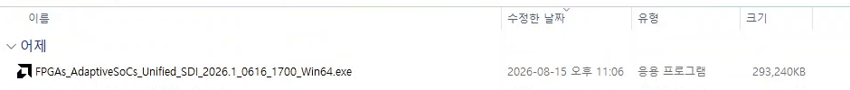
Lab Edition은 장치 프로그래밍·디버깅용이다. HDL 시뮬레이션·합성·구현을 배우는 이번 수업에서는 전체 Vivado 설계 도구가 필요하다. 배포 제품 설명
① 로그인하고 설치 방식 선택
- 받은 실행 파일을 열고 압축 해제와 시작 화면 로딩이 끝날 때까지 기다린다.
- Select Install Type에서 AMD 계정의 이메일·비밀번호를 입력한다.
- Download and Install Now를 선택하고 Next로 진행한다. 아래의 Download Image는 설치용 이미지만 따로 받는 선택지다.
{kind=link}
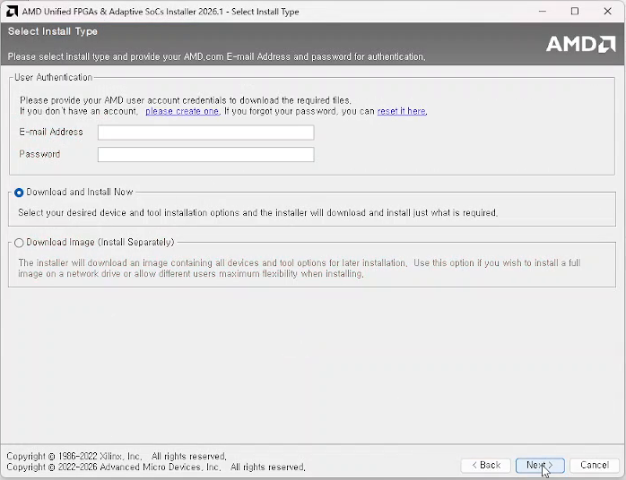
② 제품은 Vivado 선택
Select Product to Install → Vivado → Next로 진행한다. Vitis나 Lab Edition을 선택하지 않는다.
{kind=link}
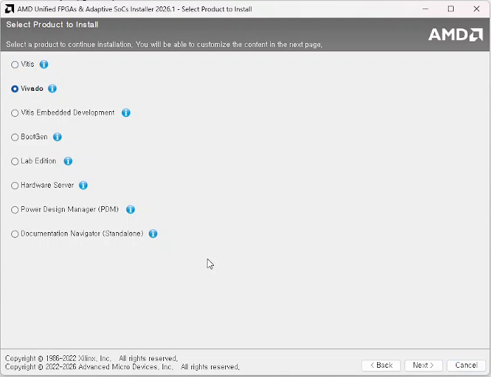
③ 필요한 도구와 Spartan-7 선택
- Design Tools: Vivado와 자동으로 포함되는 필수 구성은 유지한다. 이번 HDL 실습에 필요 없는 Model Composer·Vitis Embedded Development 등은 선택하지 않는다. DocNav는 문서 열람 도구다.
- Devices → 7 Series를 펼치고 Spartan-7 FPGAs를 선택한다. 실습에 필요 없는 다른 계열은 해제한다.
- Install Cable Drivers와 Acquire or Manage a License Key를 확인한다. 드라이버 설치 안내에 따라 Xilinx Platform Cable USB는 분리하고 진행한다.
- 하단의 Download Size / Disk Space Required는 선택 구성에 따라 바뀐다. 현재 선택에 맞는 값을 확인한 뒤 Next를 누른다.
{kind=link}
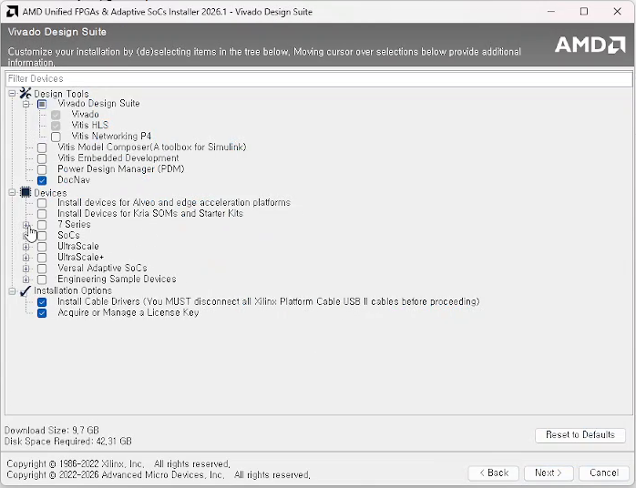
{kind=link}
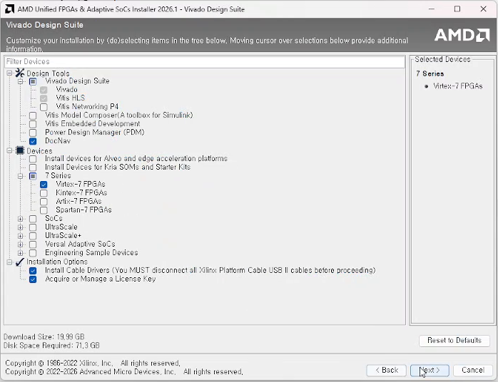
④ 약관 확인
Accept License Agreements에서 각 약관을 읽고 동의하는 항목의 I Agree를 선택한다. 필요한 동의를 마치면 Next로 진행한다. 표시되는 약관은 선택한 구성에 따라 달라질 수 있다.
{kind=link}
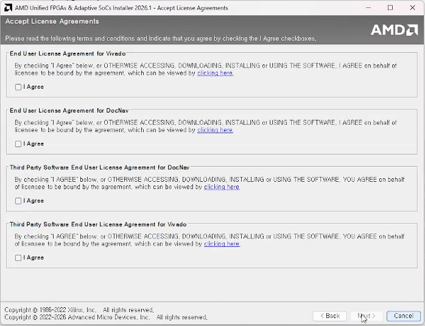
⑤ 설치 경로와 여유 공간 확인
- Select Destination Directory에서 설치 기준 경로를 지정한다. 예:
C:\AMDDesignTools. 설치 후 Vivado 도구 경로는C:\AMDDesignTools\2026.1\Vivado가 된다. - 경로에 공백을 넣지 않는다. 다른 드라이브에 설치하면 이후 VS Code task의 도구 경로도 맞춰야 한다.
- Disk Space Required보다 Disk Space Available이 충분한지 확인한다. 빨간 오류가 있으면 해결한 뒤 진행한다.
- 바탕화면 바로가기·파일 연결 등은 필요한 옵션을 선택한다.
{kind=link}
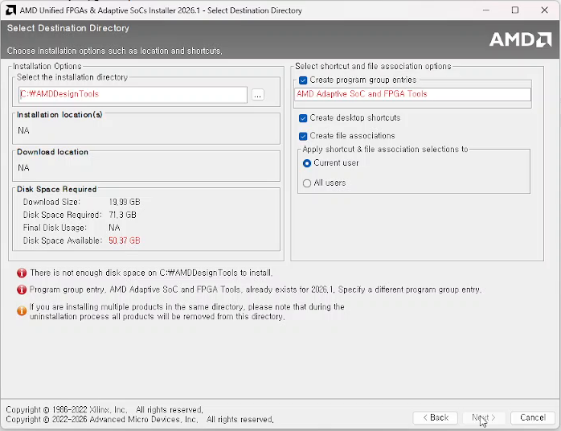
녹화의 두 오류를 구분한다.
- There is not enough disk space…: 당시 필요 공간 71.3GB, 여유 공간 50.37GB다. 먼저 디바이스 선택을 Spartan-7로 바로잡고 요구량을 다시 확인한다. 그래도 부족하면 공간을 확보하거나 충분한 다른 드라이브를 사용한다.
- Program group entry … already exists for 2026.1: 기존 설치의 시작 메뉴 그룹과 충돌한다. 이미 2026.1이 설치되어 있으면 재설치가 필요한지부터 확인한다. 추가 설치가 필요할 때만 새 프로그램 그룹 이름을 지정하거나 그룹 생성 옵션을 조정한다.
이 오류를 없애려고 기존 설치 폴더를 무작정 삭제하지 않는다.
⑥ Summary 확인 후 설치
오류를 해결해 Next로 넘어가면 Installation Summary에서 제품·디바이스·경로·필요 공간을 최종 확인하고 Install을 누른다. 다운로드·설치가 완료되면 라이선스 등록으로 이어간다.
설치 순서: AMD UG973 — Run the Installation File · 케이블 드라이버 안내
9월 6일 추가 녹화는 설치 경로의 오류 화면까지다. Summary·다운로드 진행·설치 완료 화면은 녹화에 없어 공식 절차로 설명했다. 아래 라이선스 등록과 첫 실행 화면은 8월 16일 녹화에서 가져왔다.
무료 BASIC 라이선스 발급하기
① License Manager에서 사이트 열기
Windows 시작 메뉴에서 Manage AMD Licenses를 찾아 Vivado License Manager 2026.1을 실행한다. Obtain License → Get My Full or Purchased Certificate-Based License → Connect Now 순서로 진행한다.
{kind=link}
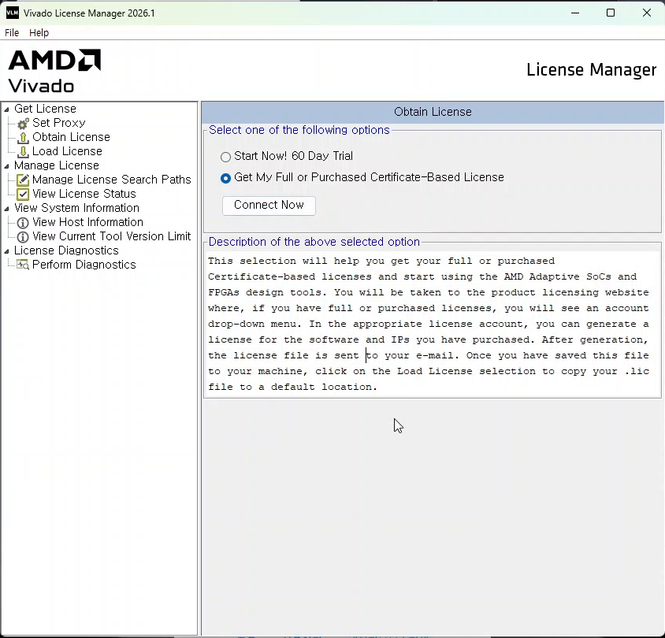
메뉴의 역할: AMD UG973 — Vivado License Manager
② BASIC 항목 선택
- 브라우저에서 AMD 계정으로 로그인한다. 이름·주소 확인 화면이 나오면 본인의 정확한 정보를 입력한다.
- Create New Licenses 탭에서 Vivado Basic Tier License, Node Locked License 항목을 찾는다.
- 해당 항목의 No Charge 표시를 확인하고 체크한다. Generate Node-Locked License를 누른다.
{kind=link}
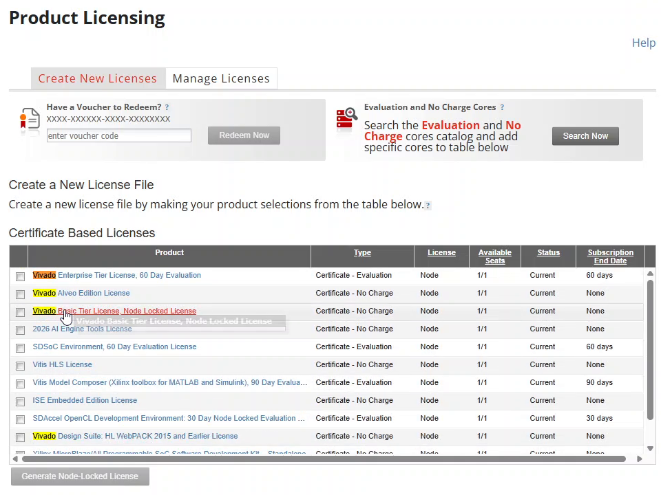
③ 사용할 PC를 지정하고 발급
- 선택한 제품이 Vivado Basic인지 확인한다.
- Host ID → Select a host에서 Vivado를 사용할 PC를 지정한다. 목록에 없으면 Add a Host로 등록한다.
- Host ID는 License Manager의 View Host Information에서 확인한다. 예시 화면이나 다른 사람의 값을 복사하지 않는다.
- 선택 내용을 확인하고 Next로 진행해 약관 확인·발급을 마친다.
- 발급된
.lic파일을 이메일 또는 사이트의 Manage Licenses에서 받아 보관한다.
{kind=link}
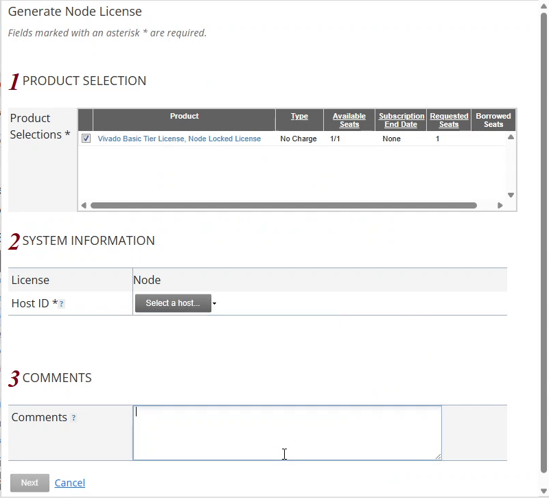
발급·Host ID·파일 받기: AMD UG973 — Create and Generate a License Key File
받은 라이선스를 PC에 등록하기
- Vivado License Manager에서 Load License를 선택한다.
- Copy License…를 누르고 방금 받은
.lic파일을 연다. - 복사 완료 메시지를 확인한다. Windows에서는 도구가 찾는
%APPDATA%\XilinxLicense위치로 복사된다. - View License Status에서 BASIC 인식 여부·만료일·Host ID 일치를 확인한다.
{kind=link}
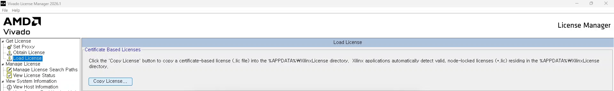
등록 위치와 순서: AMD UG973 — Install Certificate-Based Node-Locked License Key File
원본 영상 15:05에는 실제로 이 오류가 보인다. BASIC이 목록에 표시된다는 것만으로 정상 등록을 판단하지 말고, 발급한 PC 정보와 현재 PC의 Host ID를 대조한다. 일치하지 않으면 AMD 사이트에서 호스트 정보를 정정·재발급한 파일을 등록한다.
실행과 대상 부품 확인하기
Vivado 2026.1을 실행한다. 라이선스 오류 없이 시작 화면이 열리는지 확인한다.
{kind=link}
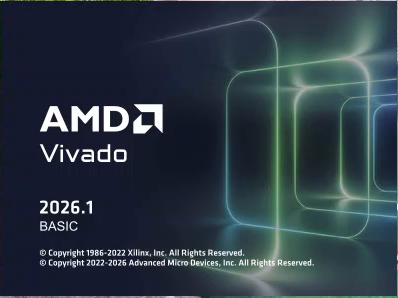
- New Project를 눌러 테스트용 프로젝트 이름·위치를 정한다.
- RTL Project와 Do not specify sources at this time을 선택한다.
- 부품 선택 화면에서 Parts 탭의 검색창에
xc7s75fgga484-1을 입력한다. - 수업 신 장비 레거시의 대상 부품이 검색되는지 확인한다. 실제 보드 부품·핀맵은 실험실 확인 결과를 따른다.
{kind=link}
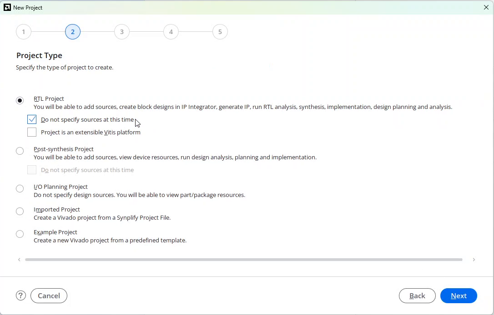
Spartan-7의 BASIC 지원: AMD 디바이스별 라이선스 지원 표. 부품 검색은 설치된 디바이스 지원을 확인하는 단계이며 실제 보드 검증과 구분한다.
VS Code에서 사용할 시뮬레이터도 확인
이번 수업은 Icarus 대신 Vivado에 포함된 XSim을 사용한다. PowerShell에서 아래 명령을 실행하면 설치 경로의 파일 존재 여부가 각각 True로 표시되어야 한다.
$vivadoBin = 'C:/AMDDesignTools/2026.1/Vivado/bin'
Test-Path "$vivadoBin/xvlog.bat"
Test-Path "$vivadoBin/xelab.bat"
Test-Path "$vivadoBin/xsim.bat"다른 경로에 설치했다면 이 경로와 배포 프로젝트의 .vscode/tasks.json 경로를 맞춘다. 파일 존재 확인은 시뮬레이션 성공 판정이 아니다. 실제 VCD 생성·파형 확인은 별도 「조합회로 시뮬레이션 예시 매뉴얼」에서 다룬다.
설치 완료 기준
- Vivado 2026.1이 라이선스 오류 없이 열린다.
- BASIC 라이선스의 만료일·Host ID를 확인했다.
- 부품 검색에서
xc7s75fgga484-1을 찾을 수 있다. - XSim 실행 파일 세 개가 설치 경로에 있다.
JTAG 연결·비트스트림 다운로드는 설치 완료 기준과 별개다. 실험실 보드·케이블 확인 후 실습 안내를 따른다.
막히면 여기부터 확인
| 증상 | 확인할 것 |
|---|---|
| 다운로드·설치가 오래 걸림 | 설치 로그·네트워크·남은 공간부터 확인한다. 진행 중인 설치를 여러 개 동시에 실행하지 않는다. |
| 설치 경로에서 Next가 비활성화됨 | 하단의 빨간 오류를 읽는다. 디스크 공간 부족과 기존 프로그램 그룹 충돌은 별개다. 설치 대상·여유 공간·그룹 이름을 각각 확인한다. |
| Vivado 대신 Hardware Manager만 사용 가능 | Lab Edition만 설치한 것은 아닌지 확인한다. 전체 설계용 Vivado가 필요하다. |
| 라이선스가 없다는 메시지 | .lic 파일을 받은 것과 Load License로 등록한 것을 구분한다. 2026.1 BASIC용 파일·만료일을 확인한다. |
| Host IDs Match: No | 발급 대상 PC가 다르거나 Host ID가 잘못 지정되었는지 확인한다. 라이선스 본문을 수동 편집하지 않는다. |
| Spartan-7 부품이 검색되지 않음 | Parts 탭·검색 필터와 Spartan-7 설치 여부를 확인한다. 필요하면 설치 프로그램에서 해당 디바이스 지원을 추가한다. |
| VS Code task가 도구를 찾지 못함 | 실제 Vivado 설치 경로와 tasks.json의 vivadoBin을 비교한다. slang-server는 XSim 실행 파일을 대신하지 않는다. |
질문할 때는 오류 메시지 전체, 실행한 단계, Vivado 버전을 함께 제시한다. 계정·라이선스 파일 내용·Host ID는 가린다.
출처와 화면 기록
스크린샷은 담당자가 제공한 아래 두 녹화에서 추출했다. 계정·비밀번호 관리자·개인 경로가 포함된 주변 영역은 잘라내고 실제 설치·라이선스 창만 사용했다. 이미지를 누르면 원본 크기의 추출 화면을 볼 수 있다.
추가 녹화 · 2026-09-06 23-56-46.mp4
- 추가 화면 A: 01:10 · 계정 입력 전 / B: 01:49 · Vivado 선택
- 추가 화면 C: 01:55 · 설치 옵션 / D: 01:58 · 7 Series 디바이스 목록
- 추가 화면 E: 01:59 · 약관 / F: 02:12 · 경로·공간·기존 설치 충돌
기존 녹화 · 2026-08-16 13-44-25.mp4
- 화면 1: 18:20 · 다운로드한 설치 파일 / 화면 2: 00:05 · License Manager
- 화면 3: 01:05 · BASIC 선택 / 화면 4: 01:30 · Host ID 선택 전
- 화면 5: 15:25 · Copy License / 화면 6: 16:25 · BASIC 시작
- 화면 7: 18:00 · RTL Project
불필요한 탐색은 생략하고, 설치 경로 오류는 문제 해결 예시로 남겼다. Virtex-7 선택 화면을 Spartan-7 선택 완료 화면으로 제시하지 않았으며, “Host IDs Match: No”도 정상 예시로 사용하지 않았다. 녹화에 없는 단계와 라이선스 정책은 각 절의 AMD 2026.1 문서로 보완했다.
이 HTML과 assets/vivado-install/ 이미지는 함께 관리한다. 학교 로고·코드 글꼴은 저장소의 weekly-slides/assets/를 상대 경로로 사용하므로 저장소를 clone한 뒤에도 열린다. 외부 스크립트·CDN 없이 본문을 읽을 수 있으며 공식 링크 방문에는 인터넷이 필요하다.